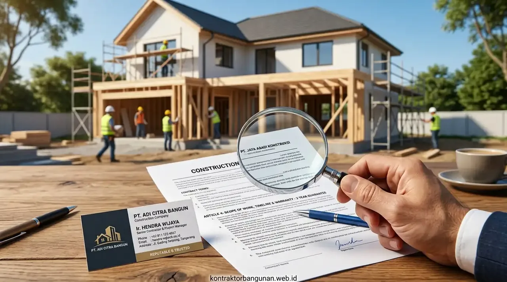

1. Mengapa Memilih Kontraktor Rumah yang Tepat Sangat Krusial?
Ketepatan memilih kontraktor menjamin integritas struktur bangunan, mencegah risiko pembengkakan anggaran tak terduga, dan memastikan legalitas perizinan PBG terpenuhi sempurna.
Berdasarkan data statistik Lembaga Pengembangan Jasa Konstruksi (LPJK) & BPS Konstruksi Nasional 2024/2025, tercatat sebanyak 38,4% sengketa konstruksi perumahan bersumber dari kegagalan tukang borongan informal dalam memenuhi spesifikasi struktur dan estimasi biaya yang membengkak antara 25% hingga 40% dari rencana awal. Tanpa perhitungan beban struktur oleh ahli sipil, rumah rawan mengalami retak dinding geser, penurunan fondasi, hingga dak atap bocor menahun.
Dengan bermitra bersama Kontraktor Bangunan, setiap tahapan konstruksi dipandu oleh dokumen teknis komprehensif mulai dari denah arsitektur, gambar instalasi MEP (Mekanikal, Elektrikal, Plumbing), hingga jadwal kurva S yang memetakan waktu kerja secara presisi.
- Alamat Kantor Fisik: Pastikan penyedia jasa memiliki kantor operasional tetap yang dapat dikunjungi langsung, bukan sekadar akun media sosial anonim.
- Rekening Bank Perusahaan: Pembayaran transaksi proyek bernilai besar sebaiknya ditujukan ke rekening atas nama badan usaha resmi, bukan rekening perorangan yang rawan disalahgunakan.
- Ketersediaan Tim Teknis: Pastikan kontraktor memiliki arsitek perancang dan pengawas lapangan (site supervisor) berdedikasi penuh.
2. Bagaimana Cara Memeriksa Legalitas dan Sertifikasi Badan Usaha Konstruksi?
Verifikasi legalitas kontraktor dilakukan dengan memeriksa Nomor Induk Berusaha (NIB) berbasis risiko pada sistem OSS, Sertifikat Badan Usaha (SBU), dan SKA/SKK tenaga ahli.
Di Indonesia, regulasi jasa konstruksi mewajibkan setiap badan usaha memiliki legalitas operasional yang jelas sesuai Peraturan Pemerintah No. 5 Tahun 2021 tentang Penyelenggaraan Perizinan Berusaha Berbasis Risiko. Legalitas bukan sekadar formalitas kertas, melainkan payung hukum yang mengikat kontraktor secara perdata jika terjadi wanprestasi atau kelalaian pengerjaan.
Mintalah salinan dokumen Akta Pendirian, NPWP Badan, NIB KBLI 41011 (Konstruksi Gedung Hunian), serta bukti keanggotaan dalam asosiasi konstruksi resmi. Kontraktor terpercaya tidak akan pernah ragu menunjukkan kelengkapan berkas tersebut kepada calon klien saat sesi konsultasi awal.
3. Bagaimana Menilai Portofolio Proyek dan Ulasan Klien Terdahulu?
Penilaian portofolio efektif mencakup inspeksi visual proyek yang telah selesai, survei ke proyek yang sedang berjalan, dan wawancara langsung dengan pemilik rumah terdahulu.
Jangan hanya terpukau oleh gambar render 3D di brosur atau media sosial. Render arsitektur adalah visualisasi konsep, sedangkan mutu konstruksi sesungguhnya terlihat pada eksekusi lapangan seperti kerataan acian dinding, kesikuan sudut ruangan, kemiringan lantai kamar mandi, dan kerapian sambungan plafon.
Mintalah jadwal untuk diajak berkunjung ke lokasi proyek aktif. Di lokasi, Anda dapat mengamati langsung etos kerja tukang, kedisiplinan penggunaan APD (Alat Pelindung Diri), tata letak penyimpanan material agar tidak rusak terkena hujan, serta catatan pengawasan harian mandor.

Inspeksi lapangan berkala memastikan pembesian sloof, kolom, dan ring balok terpasang sesuai kalkulasi SNI tahan gempa.
4. Tabel Perbandingan Kontraktor Terpercaya vs Tukang Borongan Liar
Perbandingan komprehensif antara kontraktor resmi bersertifikat dan tukang borongan non-resmi memberikan panduan objektif bagi keamanan investasi rumah Anda.
| Parameter Evaluasi | Tukang Borongan Tanpa Legalitas | Kontraktor Bangunan Profesional |
|---|---|---|
| Legalitas & Badan Hukum | Tidak berbadan hukum (perorangan) | Badan Usaha Resmi (PT/CV), NIB OSS, dan SBU Konstruksi |
| Penyusunan RAB | Sistem gelondongan per m² tanpa detail material | RAB presisi dengan AHSP detail, merk, dan volume pasti |
| Gambar Teknis (DED) | Hanya sketsa kasar atau tanpa gambar kerja | Gambar Arsitektur, Struktur, dan MEP lengkap standar PBG |
| Sistem Kontrak Kerja | Hanya kesepakatan lisan / nota tanpa materai | Surat Perjanjian Kerja (SPK) berpasal hukum kuat bermaterai |
| Skema Pembayaran | Sering minta DP besar tanpa progress jelas | Termin bertahap berbasis opname fisik real-time |
| Garansi Pasca Konstruksi | Sulit dihubungi saat terjadi kerusakan | Sertifikat garansi retensi tertulis (3 s/d 12 bulan) |
5. Mengapa Rincian RAB Transparan Wajib Diminta Sejak Awal?
RAB transparan memuat rincian volume m²/m³, merk material spesifik, upah tenaga kerja, dan kurva S jadwal pengerjaan guna mencegah biaya siluman di tengah jalan.
Menurut data Asosiasi Kontraktor Konstruksi Indonesia 2025, lebih dari 70% kasus overbudget pada pembangunan hunian pribadi disebabkan oleh ketiadaan spesifikasi merk bahan yang mengikat di awal kontrak. Oknum pemborong nakal kerap mengganti besi beton SNI dengan besi non-SNI (banci) atau menggunakan semen tipe kualitas rendah demi meraup selisih keuntungan sepihak.
Pastikan dokumen RAB mencantumkan merk semen, diameter besi beton ulir, jenis hebel/bata merah, tipe rangka atap baja ringan bersertifikasi, serta merk sanitair dan cat dinding. Dengan begitu, Anda memiliki hak penuh untuk menolak material yang tidak sesuai dengan klausul perjanjian.
6. Apa Saja Klausul Penting dalam Surat Perjanjian Kerja (SPK) dan Garansi Retensi?
Klausul krusial SPK mencakup jadwal termin berbasis progress fisik, batas waktu serah terima, denda keterlambatan (adendum), serta masa retensi garansi minimal 3 bulan.
Surat Perjanjian Kerja (SPK) adalah benteng pertahanan hukum Anda. Dokumen ini harus memuat hak dan kewajiban kedua belah pihak secara berimbang. Pembayaran sebaiknya dibagi ke dalam beberapa termin yang disesuaikan dengan opname lapangan, contohnya:
- Termin 1 (DP 15%): Mobilisasi tukang, persiapan lahan, dan pengadaan pondasi batu kali/footplate.
- Termin 2 (Progress 35%): Struktur sloof beton, kolom, balok, dan dinding bata lantai dasar.
- Termin 3 (Progress 65%): Pengecoran pelat lantai 2 atau pemasangan rangka atap baja ringan dan genteng.
- Termin 4 (Progress 90%): Plester acian, instalasi keramik/granit, sanitair, dan plafon gipsum.
- Termin 5 (Pelunasan 95%): Finishing cat, instalasi kelistrikan sakelar, dan serah terima kunci (BAST).
- Retensi (5%): Ditahan selama masa pemeliharaan 3 bulan dan baru dicairkan jika tidak ada keluhan kebocoran atau retak.
7. Mengapa Kontraktor Bangunan Menjadi Solusi Mitra Paling Tepat?
Kontraktor Bangunan memadukan keahlian arsitektur modern, rekayasa sipil berstandar SNI, serta transparansi RAB tanpa biaya tersembunyi.
Kami memahami bahwa kenyamanan dan kepastian adalah prioritas utama setiap pemilik rumah. Bersama tim ahli kami, Anda mendapatkan pendampingan menyeluruh mulai dari studi kelayakan lahan, pengurusan izin Persetujuan Bangunan Gedung (PBG), pembuatan gambar kerja detail (DED), pelaksanaan konstruksi terawasi, hingga penerbitan sertifikat garansi resmi.
Percayakan pembangunan hunian impian Anda kepada tim berpengalaman kami. Hubungi kami sekarang melalui tautan WhatsApp: Konsultasi Bangun Rumah Gratis Bersama Kontraktor Bangunan.
Pertanyaan yang Sering Diajukan (FAQ)
Kesimpulan Praktis
Memilih kontraktor rumah terpercaya adalah fondasi paling menentukan dalam merealisasikan hunian yang aman, indah, dan tahan lama tanpa risiko kerugian finansial. Dengan memverifikasi legalitas perusahaan, mengecek portofolio nyata, menuntut rincian RAB yang transparan, dan mengikat komitmen dalam SPK resmi bergaransi, Anda dapat menikmati proses pembangunan rumah impian dengan tenang dan terjamin.
Lindungi investasi properti Anda bersama mitra konstruksi berpengalaman. Diskusikan rencana pembangunan rumah Anda hari ini bersama Kontraktor Bangunan.